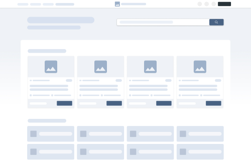

Felhasználói felület tervezése a webfejlesztés folyamatában
Egy nagy látogatottságú weboldal jelentős értékkel bír. Miután növeli a cég imidzsét, láthatóvá teszi a céget akár távoli régiókban is, növeli a piacot, gyors és megbízható kommunikációt tesz lehetővé. Nem mellesleg 24 órás reklámhordozó.
A hatékony digitális design messze túlmutat az esztétikán: tudatos problémamegoldás, amelynek célja a felhasználói viselkedés pozitív befolyásolása. A jó design nem szubjektív ízlés kérdése, hanem jól definiált elveken alapul.
A webfejlesztés folyamata dióhéjban
Bár a kurzus a HTML, CSS és JavaScript technikai részleteire koncentrál, a kódolás egy nagyobb, több lépésből álló folyamat része. A sikeres weboldal titka a gondos előkészítésben rejlik. Az alábbi vázlat egy általánosan elfogadott, felhasználóközpontú folyamatot mutat be, amely segít elhelyezni a programozói munkát a teljes projekt térképén.
1. Kutatás és Stratégia (A „Miért?”)
Mielőtt egyetlen vonalat is rajzolnánk vagy kódot írnánk, tisztázni kell a weboldal alapjait. Ebben a fázisban határozzuk meg a projekt célját (pl. eladás, informálás, regisztráció) és a célközönségét (kiknek készül az oldal?). Itt történik a piackutatás, a versenytársak elemzése és a legfontosabb funkciók meghatározása. Az eredmény egy letisztázott koncepció, ami a további munka alapját képezi.
2. Tervezés: UX és UI (A „Hogyan?”)
Ez a fázis alakítja a stratégiát kézzelfogható tervekké. A folyamat a durva vázlatoktól halad a részletesen kidolgozott, interaktív tervek felé. A két fő területe a felhasználói élmény (UX) és a felhasználói felület (UI) tervezése.
- UX (User Experience) Design: A felhasználói élmény stratégiai tervezése. A cél, hogy a weboldal használata logikus, intuitív és hatékony legyen. A UX-tervező felel a tartalom struktúrájáért, a felhasználói útvonalakért és azért, hogy a felhasználó könnyen elérje a célját.
- UI (User Interface) Design: A felhasználói felület vizuális megtervezése. Ide tartozik a gombok, menük, űrlapok és egyéb elemek kinézete, a színek, a tipográfia és a grafikai elemek egységes, esztétikus rendszere.
A tervezési folyamat kézzelfogható lépései és eredményei:
- Drótváz (Wireframe): Az első konkrét lépés. A drótváz egy alacsony részletességű, fekete-fehér vázlat, amely a weboldal „csontváza”. Csak az elemek elhelyezkedésére, a funkciókra és az információs architektúrára fókuszál, a vizuális megjelenésre nem. Célja a szerkezet gyors és olcsó tesztelése.

- Látványterv (Mockup): A drótvázra épülő statikus, de vizuálisan kidolgozott terv. A mockup már a végleges kinézetet mutatja be: tartalmazza a színeket, betűtípusokat, ikonokat és képeket. Lényegében egy nagy felbontású kép arról, hogyan fog kinézni a kész weboldal, de még nem interaktív.
- Prototípus (Prototype): A látványtervekből készített interaktív, kattintható verzió. A prototípus már szimulálja a weboldal működését: a gombokra kattintva lehet navigálni az oldalak között, meg lehet nézni az animációkat. Lehetővé teszi a felhasználói élmény alapos tesztelését és a visszajelzések begyűjtését még a fejlesztés megkezdése előtt.
Note
Több elmélet is létezik, amely leírja, hogy „mitől jó egy design”. Érdemes megemlíteni a Gestalt-alapelveket, valamint Jakob Nielsen 10 használhatósági heurisztikáját, amelyek a jó felhasználói felület alapkövei.
3. Fejlesztés (A megvalósítás)
Itt kel életre a terv. A fejlesztők a jóváhagyott prototípus és a vizuális tervek alapján leprogramozzák a weboldal működő, interaktív felületét. A két fő területéről (Frontend, Backend) már korábban olvashattunk az Egy modern webalkalmazás anatómiája fejezetben.
4. Tesztelés, Indítás és Optimalizálás (A finomhangolás)
Az elkészült oldalt alaposan tesztelni kell különböző eszközökön és böngészőkben, hogy minden hibátlanul működjön. Az indítás (élesítés) után a munka nem áll meg: analitikai adatok (pl. Google Analytics) alapján a szakemberek folyamatosan figyelik a felhasználói viselkedést, és fejlesztik a weboldalt a még jobb eredményekért.
A webfejlesztés és a webdesign nem választható el élesen; a sikeres végtermék e szakterületek szoros együttműködésének eredménye.
Note
Fenti felosztás egy lineáris (vízesésszerű) megközelítést vázol fel az érthetőség kedvéért. A modern gyakorlatban gyakran használnak iteratív, rugalmasabb módszereket, mint az Agilis módszertan vagy a DevOps.